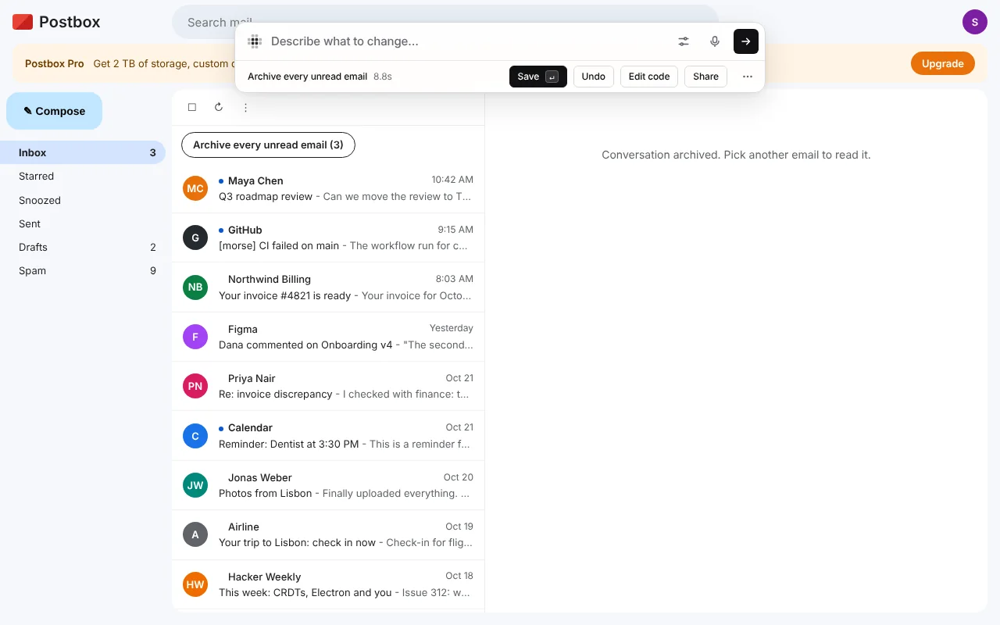

Show me once
Do it once. Morse does it from then on.
Clicking the same things over and over? Do the task by hand once and Morse writes down each step. Then say what to do with them: a button, a shortcut, or the same steps for every unread email.
- Each step in plain words as you go: Click “Archive”.
- Passwords and card numbers show as “(hidden)” and are never kept.
- Save it, change it or undo it, like any change.
